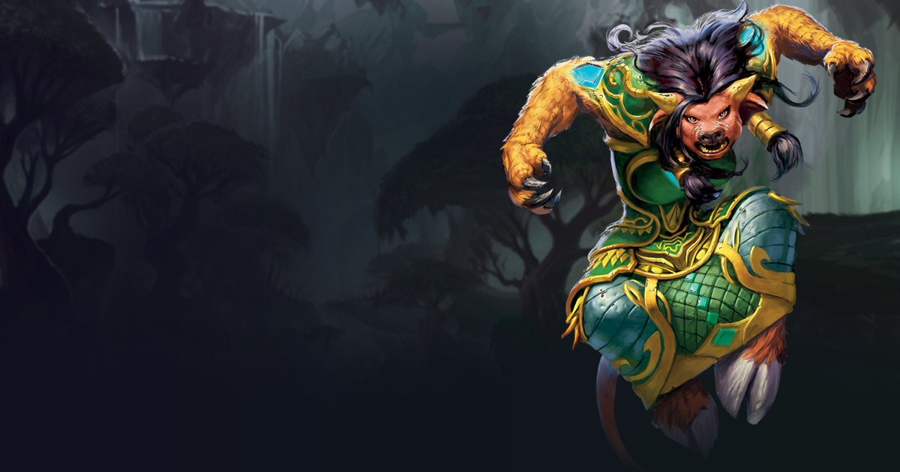

Druide Farouche dans WoW Forever : Shifting Power, le nouveau powershifting
Le dernier build de la bêta de WoW Forever change le Druide Farouche : deux nouveaux talents, Shifting Power et Improved Shifting Power, remplacent le « powershifting » de la version d'origine, tandis que Tiger's Fury et King of the Jungle disparaissent. Verdict mitigé : c'est un buff pour le DPS en PvE et un nerf pour le burst en PvP, selon l'analyse de Wowhead.
Shifting Power du Druide Farouche : tous les changements
- UP
 Shifting Power convertit instantanément 55 % du mana de base en 40 énergie. Son coût baisse avec les effets qui réduisent le coût des changements de forme.
Shifting Power convertit instantanément 55 % du mana de base en 40 énergie. Son coût baisse avec les effets qui réduisent le coût des changements de forme. - UP
 Improved Shifting Power : la recharge de 16 secondes passe à 8 secondes avec 2 points.
Improved Shifting Power : la recharge de 16 secondes passe à 8 secondes avec 2 points. - UP Plus besoin de macro, et Shifting Power ne retire pas les ralentissements ni les immobilisations, contrairement au powershifting d'origine.
- NERF
 Tiger's Fury et
Tiger's Fury et  King of the Jungle (60 énergie) disparaissent : on perd aussi +15 % de dégâts avec 20 % de présence.
King of the Jungle (60 énergie) disparaissent : on perd aussi +15 % de dégâts avec 20 % de présence. - NERF
 Fureur (Furor) : passer de la forme de chat à la forme d'ours et revenir vide toute l'énergie. Feral Charge pour interrompre ou Bash pour étourdir coûtent donc toute ton énergie, et il faut un Shifting Power (une global et du mana) pour la retrouver.
Fureur (Furor) : passer de la forme de chat à la forme d'ours et revenir vide toute l'énergie. Feral Charge pour interrompre ou Bash pour étourdir coûtent donc toute ton énergie, et il faut un Shifting Power (une global et du mana) pour la retrouver.
Ce que ça change pour ton Druide Farouche
- PvE : pour l'analyste de Wowhead, c'est positif : plus d'énergie compte plus que les 15 % de dégâts perdus.
- PvP : le burst en forme de chat baisse nettement et la consommation de mana grimpe.
- Le texte de Fureur laisse penser qu'on devrait garder son énergie en changeant de forme : Wowhead se demande si c'est un oubli qui sera corrigé.
- Nous ne chiffrons pas ce changement : le build Farouche n'est pas simulé dans notre simulateur niveau 60, donc aucun pourcentage de DPS n'est donné.
Méthode : faits tirés de l'analyse Wowhead du 6 octobre 2026, réécrits ; aucune simulation. Les jugements PvE/PvP sont ceux de l'auteur de la source. La bêta change souvent.
Questions fréquentes
Qu'est-ce que Shifting Power pour le Druide Farouche dans WoW Forever ?
Un talent qui convertit instantanément 55 % du mana de base en 40 énergie, avec 16 secondes de recharge (8 avec Improved Shifting Power). Il remplace le powershifting d'origine, sans macro.
Le Druide Farouche est-il buff ou nerf dans cette bêta ?
Les deux : plus d'énergie utile en PvE, mais Tiger's Fury et King of the Jungle sont supprimés, ce qui réduit le burst en PvP. Nous ne l'avons pas simulé.